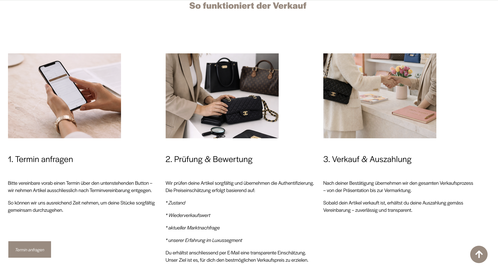
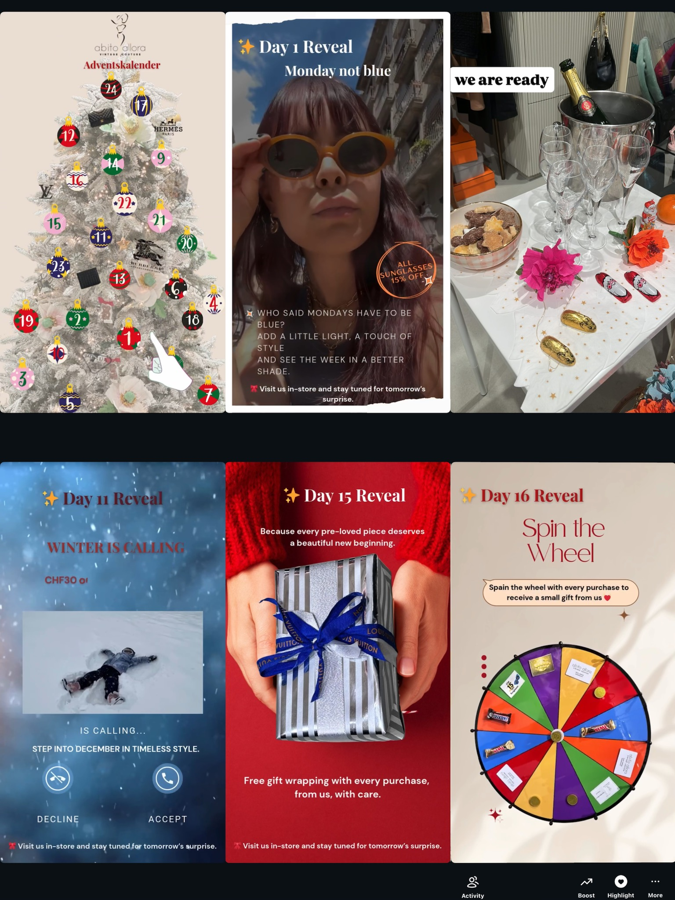
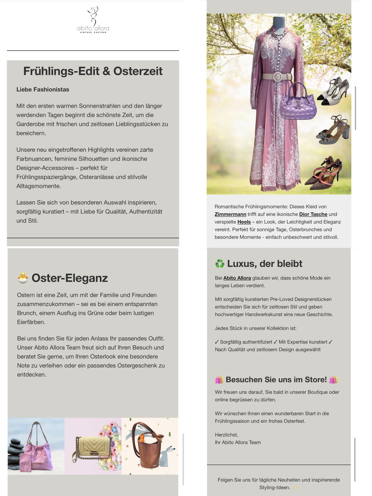

Digital Marketing & Content
Content creation, campaign coordination, social media communication, brand storytelling, newsletter support, and clear messaging tailored to audience needs.
Master’s graduate in Online Business and Marketing with hands-on experience across digital marketing, premium retail, e-commerce operations, and brand communication. I bring together a strategic marketing mindset, strong execution, and a customer-first understanding shaped by both academic research and real business practice.
A clean case study showing how strategy, content, and digital touchpoints worked together around one boutique brand.
Turning a boutique into a more connected digital experience
A Zurich-based second-hand luxury boutique case study focused on e-commerce optimisation, trust-building, integrated campaigns, and customer journey design.
Second-hand luxury boutique in Zurich
Trust barriers, fragmented journey, one-of-a-kind inventory
Store & Digital Marketing Manager
Website, campaigns, content, analytics
Abito Allora operates in a non-standardised e-commerce environment where each item is unique. Unlike traditional retail, customers require a higher level of trust, clarity, and reassurance before making a purchase or consigning items.
I led a full optimisation of the Squarespace website to improve usability, trust, and accessibility across both desktop and mobile experiences.
Focus: reducing uncertainty and building trust through clarity and transparency

Updated navigation, cleaner visual hierarchy, and a stronger premium brand presentation on desktop.

Clear pricing, step-by-step process explanation, and stronger reassurance for consignors.
I designed and executed a daily Advent Calendar campaign across Instagram and Facebook, aligned with customer behaviour and seasonal engagement patterns.
Focus: building continuous engagement loops rather than one-time campaigns

I designed and executed a daily Advent Calendar campaign across Instagram and Facebook, supported by in-store communication and digital storytelling to create repeated engagement throughout the festive period.
The newsletter supported the campaign by driving attention toward social and website touchpoints, helping connect channels rather than acting as a standalone destination.

The newsletter supported the campaign by driving attention toward social and website touchpoints, helping connect channels rather than acting as a standalone destination.
I shifted the marketing approach from isolated actions to a more connected system, linking digital and physical touchpoints to reinforce familiarity, trust, and repeated engagement over time.
Newsletter → Website → Instagram / Facebook → In-Store Experience → Back to Digital Engagement
Rather than treating each channel separately, I used them as connected touchpoints: email introduced the campaign, the website supported validation, social drove daily interaction, and in-store activity reinforced the overall experience.
I used cross-platform data to understand user behaviour and guide optimisation decisions.
Focus: using behavioural data to inform decisions rather than assumptions
60% open rate
5% CTR
~500 recipients
+29% new users
1.8K visits
70% mobile users
+43% clicks
33K impressions
Avg position 12
123K views
+37% reach
+41 followers
A concise introduction to my professional profile, strengths, and working style.
My work sits at the intersection of strategy and execution. I enjoy turning ideas into something tangible: a clearer message, a better customer journey, a stronger brand presence, or a more organised digital process.
Through my academic background in online business and marketing, I developed a strong foundation in digital strategy, consumer behaviour, content marketing, and research. At the same time, my experience in luxury retail and second-hand fashion gave me a practical understanding of customers, storytelling, service quality, and how brand perception is built in everyday interactions.
I am especially strong in environments where attention to detail, adaptability, and thoughtful communication matter. I bring a calm, structured way of working, but I also enjoy creative problem-solving and finding ways to make marketing more effective and more human.
Core strengths developed through academic work, digital projects, and customer-facing roles.
Content creation, campaign coordination, social media communication, brand storytelling, newsletter support, and clear messaging tailored to audience needs.
Website management, product listing, merchandising support, customer journey improvements, and practical work with online shop systems and digital touchpoints.
Strong sensitivity for premium positioning, customer expectations, service excellence, and the details that shape trust and brand experience.
Experience in academic research, qualitative analysis, consumer insight generation, and translating findings into practical marketing recommendations.
Selected tools and working capabilities I use across digital and marketing-related tasks.
A snapshot of the environments and roles that have shaped my professional perspective.
Supporting both store operations and digital marketing for a luxury second-hand boutique in Zurich, with responsibilities across website management, product presentation, campaign execution, and online brand communication.
Background in premium retail environments, combining client service, product knowledge, in-store coordination, and a strong eye for presentation, quality, and relationship building.
Developed research-based and practical projects in digital business, content marketing, consumer behaviour, and strategic marketing, including thesis work focused on Gen Z and digital fashion communication.
Academic foundation with a strong interest in turning theory into practical business value.
Master’s Degree in Online Business and Marketing
Lucerne University of Applied Sciences and Arts (HSLU)
My academic work focused on digital marketing, online business models, consumer insight, and strategy. A key area of my research explored how Generation Z perceives relevance, creativity, authenticity, and trust in digital fashion advertising.
How I approach collaboration, communication, and execution in professional settings.
I am thoughtful, reliable, and detail-oriented. I care about clarity, consistency, and delivering work that feels both well-structured and well-considered.
I work best in teams that value ownership, communication, and continuous improvement. I am comfortable supporting operations, managing details, and contributing ideas, especially in roles where marketing, customer experience, and brand presentation come together.